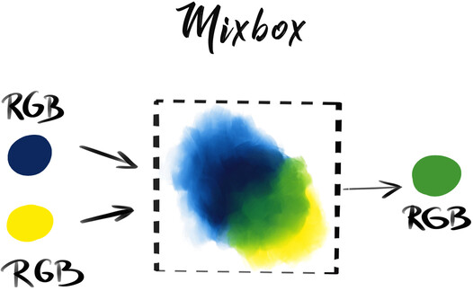

Projects

FullStack JobBoard
Engineered a full-stack job board platform combining Java backend with React frontend. Created a UI enabling job searching, application submissions, listing management.


Python CRUD TKinter
Developed a Python-based data management application with CRUD functionality offering dataset operations. Integrated TKinter to create a lightweight graphical interface. Used CSV storage solution for easy and efficient data persistence and portability.

Color Mixer AWS-Color
Designed and implemented a color manipulation system leveraging AWS-Color package. Enabling color blending and custom shade generation.The architecture solution followed SOLID programing principles.